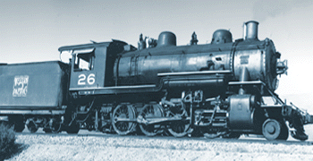

Last updated: 9 September, 2025
| Builder: | ALCO, Schenectady |
| Build #: | 46456 |
| Date: | 1909 |
| Engine #: | 26 |
| Railroad: | Western Pacific |
| Website: | www.laparks.org/traveltown traveltown.org |
| Email: | Travel.Town@lacity.org |
| Location: | Griffith Park, Travel Town, 5200 Zoo Dr, Los Angeles, CA 90027 |
| GPS: | 34.153791, -118.309056 Parking. |
| Phone: | 323-662-5874 |
| Status: | Display |
| Notes: | Donated in 1954 by Western Pacific Railroad |
Subject to change: | |
| Hours: | Monday thru Friday 1000 to 1700 (10AM to 5PM) Weekends & Holidays 1000 to 1700 (10AM to 5PM) Closed Thanksgiving and Christmas 2 (The Museum Gift Shop closes at 4:45PM) |
| Admission: | Donations only. There is no parking/admission fee to visit Travel Town! 2 |
Arthur W. Keddie was a surveyor who settled in Quincy, California, in the 1860s, to locate a wagon road down along the North Fork of the Feather River. While doing so, he became impressed with the possibilities of a railroad through the same route; snow was scarce and the grades were manageable. Keddie dedicated his life to this project, but in the 1860s he could not compete for funds with the "other" transcontinental railroad, the Central Pacific. In the 1890s, the proposed route caught the interest of Jay Gould, owner of the Denver & Rio Grande, but the Union Pacific subsequently talked him out of extending his line. When ownership of the UP changed hands, however, and the Denver & Rio Grande was cut off from their Utah access, Jay Gould's son George decided to build his own transcontinental line.
Construction began in 1903 on the Western Pacific Railroad; its $50,000,000 bond issue was guaranteed by Gould's Denver & Rio Grande, on the stipulation that grades would not exceed 1%, nor curves 10 degrees, an amazing feat for a railroad that clambered more than 5200 feet over and through the Sierras. Our #26 was already on the line, working in Utah and Nevada, when road crews working eastward met those coming west on November 1, 1909. Contracts were already signed with the Santa Fe Railway, the Pacific Steamship Company, and a Japanese navigation company to provide connections to the rest of the world. Passenger service was inaugurated one year later and Keddie, tears in his eyes, was on hand to see his fifty-year dream come true.
| Class: | C-43 |
| Gauge: | 4'-8½" |
| F.M.Whyte: | |
| Drivers: | |
| Gear Ratio: | |
| Tractive Effort: | |
| Weight: | 119 tons |
| Weight on Drivers: | |
| Length: | |
| Boiler: | |
| Cylinders: | 20"x30" |
| Top Speed: | |
| Horsepower: | |
| Fuel: | |
| Fuel Type: | |
| Water: | |
| Steam psi: |